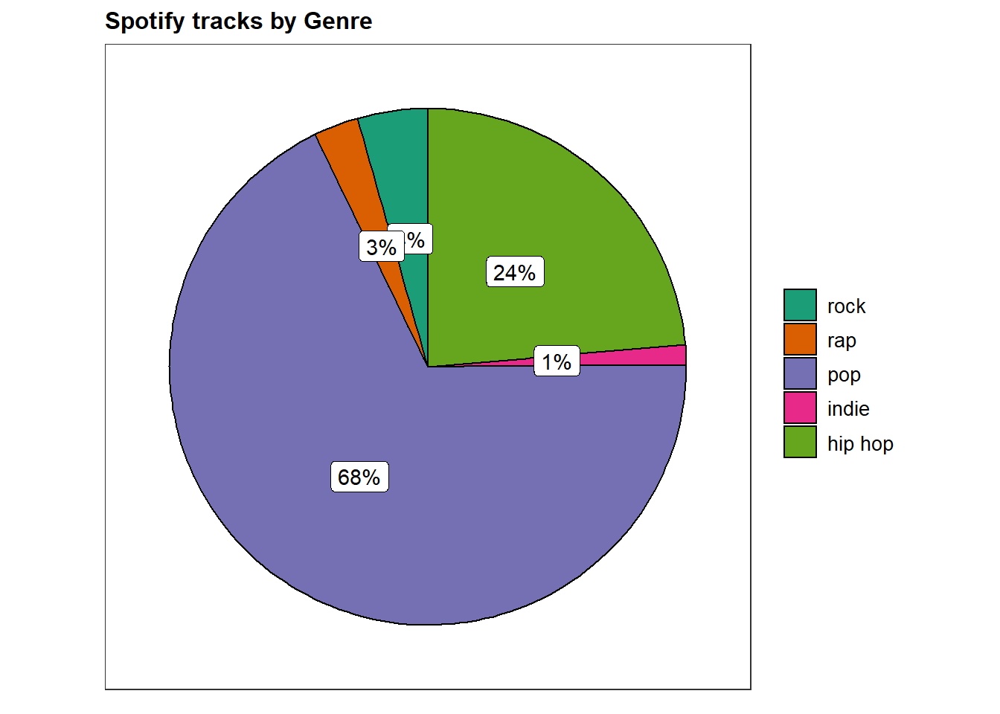
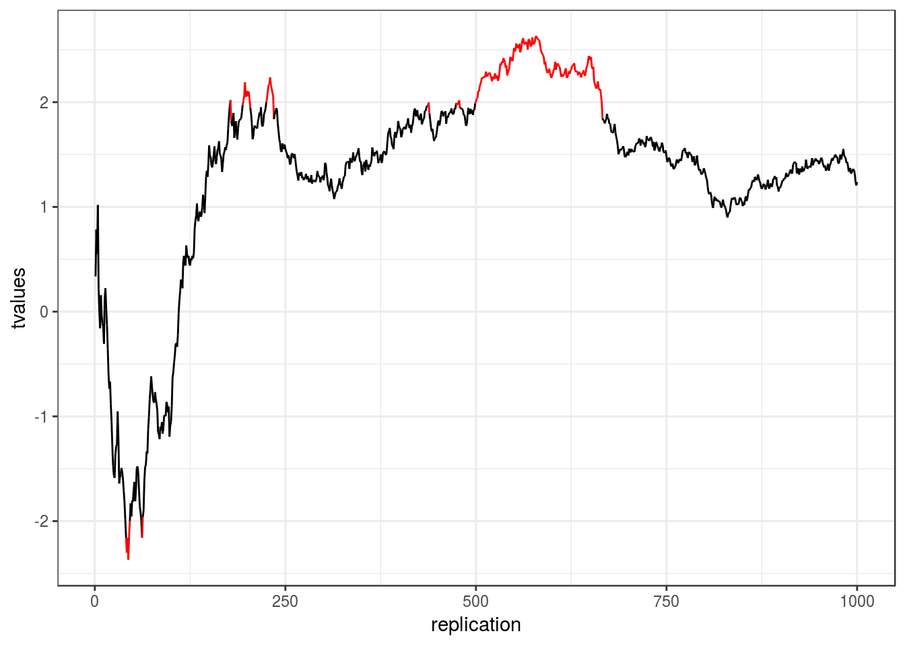

4 Summarizing data
4.1 Summary statistics
This section discusses how to produce and analyze basic summary statistics. We make a distinction between categorical and continuous variables, for which different statistics are permissible.
| OK to compute… | Nominal | Ordinal | Interval | Ratio |
|---|---|---|---|---|
| frequency distribution | Yes | Yes | Yes | Yes |
| median and percentiles | No | Yes | Yes | Yes |
| mean, standard deviation, standard error of the mean | No | No | Yes | Yes |
| ratio, or coefficient of variation | No | No | No | Yes |
As an example data set, we will be using the Spotify music data. Let’s load and inspect the data first. Students of the course can get the data via Learn@WU. If you are not enrolled in the course please contact Daniel Winkler (https://www.wu.ac.at/en/imsm/about-us/team/daniel-winkler).
4.1.1 Categorical variables
Categorical variables contain a finite number of categories or distinct groups and are also known as qualitative variables. There are different types of categorical variables:
- Nominal variables: variables that have two or more categories but no logical order (e.g., music genres). A dichotomous variables is simply a nominal variable that only has two categories (e.g., gender).
- Ordinal variables: variables that have two or more categories that can also be ordered or ranked (e.g., income groups).
For this example, we are interested in the following two variables
- “genre”: the music genre the song is associated with, subsetted for the most frequent genres.
- “explicit”: whether the lyrics of the tracks are explicit or not (0 = not explicit, 1 = explicit)
You can find a full description of the variables here:
In a first step, we convert the variables to factor variables using the factor() function to assign appropriate labels according to the scale points:
s.genre <- c("pop", "hip hop", "rock", "rap", "indie")
music_data <- subset(music_data, top.genre %in% s.genre)
music_data$genre_cat <- as.factor(music_data$top.genre)
music_data$explicit_cat <- factor(music_data$explicit,
levels = c(0:1), labels = c("not explicit", "explicit"))
music_data$adv_spending <- music_data$adv_spending/10^111 # e^111 = scaling factor for specific outliers
music_data$adv_spending2 <- music_data$adv_spendingThe table() function creates a frequency table. Let’s start with the number of occurrences of the categories associated with the genre and explicitness variables separately:
##
## hip hop indie pop rap rock
## 9907 528 28448 1180 1839##
## not explicit explicit
## 30204 11698It is obvious that there are more tracks with non-explicit lyrics than songs with explicit lyrics. For variables with more categories, it might be less obvious and we might use the summary() function, which produces further statistics.
## Min. 1st Qu. Median Mean 3rd Qu. Max.
## 0.0000 0.0000 0.0000 0.2792 1.0000 1.0000Often, we are interested in the relative frequencies, which can be obtained by using the prop.table() function.
##
## hip hop indie pop rap rock
## 0.23643263 0.01260083 0.67891747 0.02816095 0.04388812##
## not explicit explicit
## 0.7208248 0.2791752Now let’s investigate if the genre differs by expliciteness. To do this, we simply apply the table() function to both variables:
## explicit_cat
## genre_cat not explicit explicit
## hip hop 3515 6392
## indie 495 33
## pop 23881 4567
## rap 536 644
## rock 1777 62Again, it might be more meaningful to look at the relative frequencies using prop.table():
## explicit_cat
## genre_cat not explicit explicit
## hip hop 0.0838862107 0.1525464178
## indie 0.0118132786 0.0007875519
## pop 0.5699250632 0.1089924109
## rap 0.0127917522 0.0153691948
## rock 0.0424084769 0.0014796430Note that the above output shows the overall relative frequencies when explicit and non-explicit songs are considered together. In this context, it might be even more meaningful to look at the conditional relative frequencies. This can be achieved by adding a ,2 to the prop.table() command, which tells R to compute the relative frequencies by the columns (which is in our case the explicitness variable):
prop.table(table(music_data[, c("genre_cat", "explicit_cat")]),
2) #conditional relative frequencies## explicit_cat
## genre_cat not explicit explicit
## hip hop 0.116375315 0.546418191
## indie 0.016388558 0.002820995
## pop 0.790656867 0.390408617
## rap 0.017745994 0.055052146
## rock 0.058833267 0.0053000514.1.2 Continuous variables
4.1.2.1 Descriptive statistics
Continuous variables are numeric variables that can take on any value on a measurement scale (i.e., there is an infinite number of values between any two values). There are different types of continuous variables:
- Interval variables: while the zero point is arbitrary, equal intervals on the scale represent equal differences in the property being measured. E.g., on a temperature scale measured in Celsius the difference between a temperature of 15 degrees and 25 degrees is the same difference as between 25 degrees and 35 degrees but the zero point is arbitrary.
- Ratio variables: has all the properties of an interval variable, but also has an absolute zero point. When the variable equals 0.0, it means that there is none of that variable (e.g., number of products sold, willingness-to-pay, mileage a car gets).
Computing descriptive statistics in R is easy and there are many functions from different packages that let you calculate summary statistics (including the summary() function from the base package). In this tutorial, we will use the describe() function from the psych package:
## vars n mean sd median trimmed mad min
## trackPopularity 1 41902 42.19 21.93 46.0 43.32 20.76 0
## duration_ms 2 41892 215476.95 59067.55 209990.5 212072.35 39194.75 1000
## max range skew kurtosis se
## trackPopularity 100 100 -0.46 -0.57 0.11
## duration_ms 3924548 3923548 14.95 755.65 288.59In the above command, we used the psych:: prefix to avoid confusion and to make sure that R uses the describe() function from the psych package since there are many other packages that also contain a desribe() function. Note that you could also compute these statistics separately by using the respective functions (e.g., mean(), sd(), median(), min(), max(), etc.).
The psych package also contains the describeBy() function, which lets you compute the summary statistics by sub-group separately. For example, we could easily compute the summary statistics by expliciteness as follows:
##
## Descriptive statistics by group
## group: not explicit
## vars n mean sd median trimmed mad min
## trackPopularity 1 30204 41.08 21.48 44 42.02 20.76 0
## duration_ms 2 30195 219629.07 58949.53 213567 216310.72 38765.54 1000
## max range skew kurtosis se
## trackPopularity 100 100 -0.39 -0.61 0.12
## duration_ms 3924548 3923548 18.08 986.56 339.24
## ------------------------------------------------------------
## group: explicit
## vars n mean sd median trimmed mad min
## trackPopularity 1 11698 45.07 22.81 50 46.71 19.27 0
## duration_ms 2 11697 204758.53 58015.74 198987 200790.11 38528.33 33422
## max range skew kurtosis se
## trackPopularity 98 98 -0.67 -0.38 0.21
## duration_ms 2147004 2113582 7.54 184.82 536.42Note that you could just as well use other packages to compute the descriptive statistics. For example, you could have used the stat.desc() function from the pastecs package:
## trackPopularity duration_ms
## nbr.val 41902.0000000 41892.0000000
## nbr.null 2718.0000000 0.0000000
## nbr.na 0.0000000 10.0000000
## min 0.0000000 1000.0000000
## max 100.0000000 3924548.0000000
## range 100.0000000 3923548.0000000
## sum 1767874.0000000 9026760380.0000000
## median 46.0000000 209990.5000000
## mean 42.1906830 215476.9497756
## SE.mean 0.1071435 288.5914072
## CI.mean.0.95 0.2100034 565.6451076
## var 481.0231842 3488975232.0832715
## std.dev 21.9322407 59067.5480453
## coef.var 0.5198361 0.2741247Computing statistics by group is also possible by using the wrapper function by(). Within the function, you first specify the data on which you would like to perform the grouping music_data[,c("trackPopularity", "adv_spending")], followed by the grouping variable music_data$explicit_cat and the function that you would like to execute (e.g., stat.desc()):
library(pastecs)
by(music_data[, c("trackPopularity", "duration_ms")],
music_data$explicit_cat, stat.desc)## music_data$explicit_cat: not explicit
## trackPopularity duration_ms
## nbr.val 30204.0000000 30195.000000
## nbr.null 1777.0000000 0.000000
## nbr.na 0.0000000 9.000000
## min 0.0000000 1000.000000
## max 100.0000000 3924548.000000
## range 100.0000000 3923548.000000
## sum 1240696.0000000 6631699851.000000
## median 44.0000000 213567.000000
## mean 41.0772083 219629.072727
## SE.mean 0.1235926 339.244534
## CI.mean.0.95 0.2422467 664.933723
## var 461.3697298 3475047544.433871
## std.dev 21.4795188 58949.533878
## coef.var 0.5229060 0.268405
## ------------------------------------------------------------
## music_data$explicit_cat: explicit
## trackPopularity duration_ms
## nbr.val 11698.0000000 11697.0000000
## nbr.null 941.0000000 0.0000000
## nbr.na 0.0000000 1.0000000
## min 0.0000000 33422.0000000
## max 98.0000000 2147004.0000000
## range 98.0000000 2113582.0000000
## sum 527178.0000000 2395060529.0000000
## median 50.0000000 198987.0000000
## mean 45.0656522 204758.5303069
## SE.mean 0.2109063 536.4245115
## CI.mean.0.95 0.4134115 1051.4815357
## var 520.3441548 3365826447.7986922
## std.dev 22.8110533 58015.7431030
## coef.var 0.5061738 0.2833374These examples are meant to exemplify that there are often many different ways to reach a goal in R. Which one you choose depends on what type of information you seek (the results provide slightly different information) and on personal preferences.
4.1.2.2 Using frequency distributions to go beyond the data
XXX
4.1.2.3 Creating subsets
From the above statistics it is clear that the data set contains some severe outliers on some variables. For example, the maximum amount of spending on advertisment is 5656214468105730048 units. You might want to investigate these cases and delete them if they would turn out to indeed induce a bias in your analyses. For normally distributed data, any absolute standardized deviations larger than 3 standard deviations from the mean are suspicious. Let’s check if potential outliers exist in the data:
library(dplyr)
music_data %>% mutate(adv_spending_std = as.vector(scale(adv_spending2))) %>%
filter(abs(adv_spending_std) > 3) %>% select(id,
trackName, adv_spending, adv_spending_std)## # A tibble: 2 x 4
## id trackName adv_spending adv_spending_std
## <chr> <chr> <dbl> <dbl>
## 1 0bAkKNCQfWkexHFn7fIKns In My Feelings 5.66e18 62.6
## 2 14msK75pk3pA33pzPVNtBF 7 rings 1.01e18 11.1Indeed, there appear to be two potential outliers, which we may wish to exclude before we start fitting models to the data. You could easily create a subset of the original data, which you would then use for estimation using the filter() function from the dplyr() package. For example, the following code creates a subset that excludes all cases with a standardized duration of more than 3:
library(dplyr)
estimation_sample <- music_data %>% mutate(adv_spending_std = as.vector(scale(adv_spending))) %>%
filter(abs(adv_spending_std) < 3)
psych::describe(estimation_sample[, c("trackPopularity",
"adv_spending")])## vars n mean sd median trimmed
## trackPopularity 1 4038 56.1 25.75 65.00 59.04
## adv_spending 2 4038 14299852780120.5 514033938921804.06 0.01 14.09
## mad min max range skew kurtosis
## trackPopularity 16.31 0 100 100 -0.98 -0.27
## adv_spending 0.01 0 23007897832533400 23007897832533400 41.45 1773.85
## se
## trackPopularity 0.41
## adv_spending 8089257063071.864.2 Data visualization
This section discusses how to produce appropriate graphics to describe our data visually. While R includes tools to build plots, we will be using the ggplot2 package by Hadley Wickham. It has the advantage of being fairly straightforward to learn but being very flexible when it comes to building more complex plots. For a more in depth discussion you can refer to chapter 4 of the book “Discovering Statistics Using R” by Andy Field et al. or read the following chapter from the book “R for Data science” by Hadley Wickham as well as “R Graphics Cookbook” by Winston Chang.
ggplot2 is built around the idea of constructing plots by stacking layers on top of one another. Every plot starts with the ggplot(data) function, after which layers can be added with the “+” symbol. The following figures show the layered structure of creating plots with ggplot.


4.2.1 Categorical variables
4.2.1.1 Bar plot
To give you an example of how the graphics are composed, let’s go back to the frequency table from the previous chapter, where we created this table:
s.genre <- c("pop", "hip hop", "rock", "rap", "indie")
music_data <- subset(music_data, top.genre %in% s.genre)
music_data$genre_cat <- as.factor(music_data$top.genre)
music_data$explicit_cat <- factor(music_data$explicit,
levels = c(0:1), labels = c("not explicit", "explicit"))
head(music_data)How can we plot this kind of data? Since we have a categorical variable, we will use a bar plot. However, to be able to use the table for your plot, you first need to assign it to an object as a data frame using the as.data.frame()-function.
table_plot_rel <- as.data.frame(prop.table(table(music_data[,
c("genre_cat")]))) #relative frequencies #relative frequencies
head(table_plot_rel)Since Var1 is not a very descriptive name, let’s rename the variable to something more meaningful
library(plyr)
table_plot_rel <- plyr::rename(table_plot_rel, c(Var1 = "Genre"))
head(table_plot_rel)Once we have our data set we can begin constructing the plot. As mentioned previously, we start with the ggplot() function, with the argument specifying the data set to be used. Within the function, we further specify the scales to be used using the aesthetics argument, specifying which variable should be plotted on which axis. In our example, we would like to plot the categories on the x-axis (horizontal axis) and the relative frequencies on the y-axis (vertical axis).

Figure 4.1: Bar chart (step 1)
You can see that the coordinate system is empty. This is because so far, we have told R merely which variables we would like to plot but we haven’t specified which geometric figures (points, bars, lines, etc.) we would like to use. This is done using the geom_xxx function. ggplot includes many different geoms, for a wide range of plots (e.g., geom_line, geom_histogram, geom_boxplot, etc.). A good overview of the various geom functions can be found here. In our case, we would like to use a bar chart for which geom_col is appropriate.
Figure 4.2: Bar chart (step 2)
Note that the same could be achieved using geom_bar. However, by default geom_bar counts the number of observations within each category of a variable. This is not required in our case because we have already used the prop.table() function to compute the relative frequencies. The argument stat = "identity" prevents geom_bar from performing counting operations and uses it “as it is”.

Figure 4.3: Bar chart (alternative specification)
Now we have specified the data, the scales and the shape. Specifying this information is essential for plotting data using ggplot. Everything that follows now just serves the purpose of making the plot look nicer by modifying the appearance of the plot. How about some more meaningful axis labels? We can specify the axis labels using the ylab() and xlab() functions:

Figure 4.4: Bar chart (step 3)
How about adding some value labels to the bars? This can be done using geom_text(). Note that the sprintf() function is not mandatory and is only added to format the numeric labels here. The function takes two arguments: the first specifies the format wrapped in two % sings. Thus, %.0f means to format the value as a fixed point value with no digits after the decimal point, and %% is a literal that prints a “%” sign. The second argument is simply the numeric value to be used. In this case, the relative frequencies multiplied by 100 to obtain the percentage values. Using the vjust = argument, we can adjust the vertical alignment of the label. In this case, we would like to display the label slightly above the bars.
bar_chart + geom_col() + ylab("Relative frequency") +
xlab("Genre") + geom_text(aes(label = sprintf("%.0f%%",
Freq/sum(Freq) * 100)), vjust = -0.2)
Figure 4.5: Bar chart (step 4)
We could go ahead and specify the appearance of every single element of the plot now. However, there are also pre-specified themes that include various formatting steps in one singe function. For example theme_bw() would make the plot appear like this:
bar_chart + geom_col() + ylab("Relative frequency") +
xlab("Genre") + geom_text(aes(label = sprintf("%.0f%%",
Freq/sum(Freq) * 100)), vjust = -0.2) + theme_bw()
Figure 4.6: Bar chart (step 5)
and theme_minimal() looks like this:
bar_chart + geom_col() + ylab("Relative frequency") +
xlab("Genre") + geom_text(aes(label = sprintf("%.0f%%",
Freq/sum(Freq) * 100)), vjust = -0.2) + theme_minimal()
Figure 4.7: Bar chart (options 1)
These were examples of built-in formations of ggolot(), where the default is theme_classic(). For even more options, check out the ggthemes package, which includes formats for specific publications. You can check out the different themes here. For example theme_economist() uses the formatting of the journal “The Economist”:
library(ggthemes)
bar_chart + geom_col() + ylab("Relative frequency") +
xlab("Genre") + theme_economist()
Figure 4.8: Bar chart (options 2)
Summary
To create a plot with ggplot we give it the appropriate data (in the ggplot() function), tell it which shape to use (via a function of the geom family), assign variables to the correct axis (by using the the aes() function) and define the appearance of the plot.
Now we would like to investigate whether the distribution differs between explicit and non-explicit songs. For this purpose we first construct the conditional relative frequency table from the previous chapter again. Recall that the latter gives us the relative frequency within a group (in our case explicit and non-explicit), as compared to the relative frequency within the entire sample.
table_plot_cond_rel <- as.data.frame(prop.table(table(music_data[,
c("genre_cat", "explicit_cat")]), 2)) #conditional relative frequenciesWe can now take these tables to construct plots grouped by explicitness. To achieve this we simply need to add the facet_wrap() function, which replicates a plot multiple times, split by a specified grouping factor. Note that the grouping factor has to be supplied in R’s formula notation, hence it is preceded by a “~” symbol.
ggplot(table_plot_cond_rel, aes(x = genre_cat, y = Freq)) +
geom_col() + facet_wrap(~explicit_cat) + ylab("Conditional relative frequency") +
xlab("Genre") + theme_bw()Figure 4.9: Grouped bar chart (conditional relative frequencies)
To plot the relative frequencies for each response category by group in a slightly different way, we can also use the fill argument, which tells ggplot to fill the bars by a specified variable (in our case “explicit”). The position = "dodge" argument causes the bars to be displayed next to each other (as opposed to stacked on top of one another).
ggplot(table_plot_cond_rel, aes(x = genre_cat, y = Freq, fill = explicit_cat)) + #use "fill" argument for different colors
geom_col(position = "dodge") + #use "dodge" to display bars next to each other (instead of stacked on top)
geom_text(aes(label = sprintf("%.0f%%", Freq/sum(Freq) * 100)),position=position_dodge(width=0.9), vjust=-0.25) +
ylab("Conditional relative frequency") +
xlab("Genre") +
theme_bw() Figure 4.10: Grouped bar chart (conditional relative frequencies) (2)
4.2.1.2 Pie plot
We could also create a pie plot with ggplot.
ggplot(subset(table_plot_rel,Freq > 0), aes(x="", y=Freq, fill=Genre)) + # Create a basic bar
geom_bar(stat="identity", width=1) +
coord_polar("y", start=0) + #Convert to pie (polar coordinates)
geom_text(aes(label = paste0(round(Freq*100), "%")), position = position_stack(vjust = 0.5)) + #add labels
#scale_fill_manual(values=c("#55DDE0", "#33658A", "#2F4858", "#F6AE2D")) # Add color scale (hex colors)
scale_fill_brewer(palette = "Blues") +
labs(x = NULL, y = NULL, fill = NULL, title = "Spotify tracks by Genre") + #remove labels and add title
theme_classic() +
theme(axis.line = element_blank(), # Tidy up the theme
axis.text = element_blank(),
axis.ticks = element_blank(),
plot.title = element_text(hjust = 0.5, color = "#666666")) 
Alternatively we could use ggstatplot, which has a smiliar syntax:
ggstatsplot::ggpiestats(
data = music_data, # use raw data because we need disaggregated factors for x
x = genre_cat,
title = "Spotify tracks by Genre",
messages = FALSE,
bf.message = FALSE,
legend.title = element_blank(),
#palette = "Blues",
results.subtitle = FALSE
)
4.2.1.3 Covariation plots
To visualize the covariation between categorical variables, you’ll need to count the number of observations for each combination stored in the frequency table. Say, we wanted to investigate the association between genre and popularity. First, we need to make sure that the respective variables are coded as factors.
music_data$genre_cat <- as.factor(music_data$top.genre)
music_data$popularity_factor <- cut(music_data$trackPopularity,
breaks = c(-Inf, 40, 60, Inf), labels = c("low",
"middle", "high"))There are multiple ways to visualize such a relationship with ggplot. One option would be to use a variation of the scatterplot which counts how many points overlap at any given point and increases the dot size accordingly. This can be achieved with geom_count(). From the bar charts above, we know that the categories in genre differ in size. To account for that we set the parameters size and group in geom_count, which gives us the conditional relative frequencies. This is equivalent to the conditional relative frequency table from above, only now the stat(prop) argument assures that we get relative frequencies and with the group argument we tell R to compute the relative frequencies by genre.
ggplot(data = music_data) + geom_count(aes(x = genre_cat,
y = popularity_factor, size = stat(prop), group = genre_cat)) +
ylab("Popularity") + xlab("Genre") + labs(size = "Proportion") +
theme_bw()
Figure 4.11: Covariation between categorical data (1)
Another option would be to use a tile plot that changes the color of the tile based on the frequency of the combination of factors. To achieve this we first have to create a dataframe that contains the relative frequencies of all combinations of factors. Then we can take this dataframe and supply it to geom_tile(), while specifying that the fill of each tile should be dependent on the observed frequency of the factor combination, which is done by specifying the fill in the aes() function.
table_plot_rel <- prop.table(table(music_data[, c("genre_cat",
"popularity_factor")]), 1)
table_plot_rel <- as.data.frame(table_plot_rel)
ggplot(table_plot_rel, aes(x = genre_cat, y = popularity_factor)) +
geom_tile(aes(fill = Freq)) + ylab("Popularity") +
xlab("Genre") + theme_bw()
Figure 4.12: Covariation between categorical data (2)
4.2.2 Continuous variables
4.2.2.1 Histogram
Histograms can be plotted for continuous data using the geom_histogram() function. Note that the aes() function only needs one argument here, since a histogram is a plot of the distribution of only one variable. As an example, let’s consider our data set containing the advertising expenditures and product sales of a company selling products in two different stores:
Now we can create the histogram using geom_histogram(). The argument binwidth specifies the range that each bar spans, col = "black" specifies the border to be black and fill = "darkblue" sets the inner color of the bars to dark blue. For brevity, we have now also started naming the x and y axis with the single function labs(), instead of using the two distinct functions xlab() and ylab().
ggplot(music_data, aes(mstreams)) + geom_histogram(binwidth = 3000,
col = "black", fill = "darkblue") + labs(x = "Number of streams",
y = "Frequency") + theme_bw()
Figure 4.13: Histogram
Alternatively we could use ggstatplot, which has a smiliar syntax:
gghistostats(
data = music_data, # dataframe from which variable is to be taken
x = mstreams, # numeric variable whose distribution is of interest
title = "Distribution of the number of streams", # title for the plot
caption = substitute(paste(italic("Source:"), "Spotify")),
centrality.para = "mean", # which measure of central tendency is to be plotted
centrality.color = "darkred", # decides color for central tendency line
binwidth = 3000, # binwidth value
messages = FALSE, # turn off the messages
ggtheme = theme_bw(), # choosing a different theme
ggstatsplot.layer = FALSE, # turn off ggstatsplot theme layer
bf.message = FALSE,
results.subtitle = FALSE
)
4.2.2.2 Boxplot
Another common way to display the distribution of continuous variables is through boxplots. ggplot will construct a boxplot if given the geom geom_boxplot(). In our case we want to show the difference in distribution between the two stores in our sample, which is why the aes() function contains both an x and a y variable.
ggplot(music_data, aes(x = explicit_cat, y = mstreams)) +
geom_boxplot(coef = 3) + labs(x = "Explicit", y = "Number of streams") +
theme_bw()
Figure 4.14: Boxplot by group
The following graphic shows you how to interpret the boxplot:

Information contained in a Boxplot
You may also augment the boxplot with the data points using geom_jitter():
ggplot(music_data, aes(x = explicit_cat, y = mstreams)) +
geom_boxplot(coef = 3) + geom_jitter(colour = "red",
alpha = 0.2) + labs(x = "Explicit", y = "Number of streams") +
theme_bw()
Figure 4.15: Boxplot with augmented data points
In case you would like to create the boxplot on the total data (i.e., not by group), just leave the x = argument within the aes() function empty:
ggplot(music_data, aes(x = "", y = mstreams)) + geom_boxplot(coef = 3) +
labs(x = "Total", y = "Number of streams") + theme_bw()
Figure 4.16: Single Boxplot
Alternatively we could use ggstatplot, which has a smiliar syntax:
ggbetweenstats(
data = music_data,
title = "Number of streams by explicitness", # title for the plot
plot.type = "box",
x = explicit_cat, # 2 groups
y = mstreams,
type = "p", # default
messages = FALSE,
bf.message = FALSE
)
4.2.2.3 Plot of means
Another quick way to get an overview of the difference between two groups is to plot their respective means with confidence intervals. Two things about this plot are new. First, there are now two geoms included in the same plot. This is one of the big advantages of ggplot’s layered approach to graphs, the fact that new elements can be drawn by simply adding a new line with a new geom function. In this case we want to add confidence bounds to our plot, which we achieve by adding a geom_pointrange() layer. Recall that if the interval is small, the sample must be very close to the population and when the interval is wide, the sample mean is likely very different from the population mean and therefore a bad representation of the population. Second, we are using an additional argument in geom_bar(), namely stat =, which is short for statistical transformation. Every geom uses such a transformation in the background to adapt the data to be able to create the desired plot. geom_bar() typically uses the count stat, which would create a similar plot to the one we saw at the very beginning, counting how often a certain value of a variable appears. By telling geom_bar() explicitly that we want to use a different stat we can override its behavior, forcing it to create a bar plot of the means.
ggplot(music_data, aes(explicit_cat, duration_ms)) +
geom_bar(stat = "summary", color = "black", fill = "white",
width = 0.7, na.rm = T) + geom_pointrange(stat = "summary",
fun.ymin = function(x) mean(x) - sd(x), fun.ymax = function(x) mean(x) +
sd(x), fun.y = mean, na.rm = T) + labs(x = "Explicit",
y = "Average number of streams") + theme_bw()
Figure 4.17: Plot of means
4.2.2.4 Scatter plot
The most common way to show the relationship between two continuous variables is a scatterplot. The following code creates a scatterplot with some additional components. The geom_smooth() function creates a smoothed line from the data provided. In this particular example we tell the function to draw the best possible straight line (i.e., minimizing the distance between the line and the points) through the data (via the argument method = "lm"). The “fill” and “alpha” arguments solely affect appearance, in our case the color and the opacity of the confidence interval, respectively.
ggplot(music_data, aes(log(adv_spending), mstreams)) +
geom_point() + geom_smooth(method = "lm", fill = "blue",
alpha = 0.1) + labs(x = "Advertising expenditures (EUR)",
y = "Number of streams") + theme_bw()
Figure 4.18: Scatter plot
As you can see, there appears to be a positive relationship between advertising and sales.
4.2.2.4.1 Grouped scatter plot
It could be that customers from different store respond differently to advertising. We can visually capture such differences with a grouped scatter plot. By adding the argument colour = store to the aesthetic specification, ggplot automatically treats the two stores as distinct groups and plots accordingly.
ggplot(music_data, aes(log(adv_spending), mstreams,
colour = explicit_cat)) + geom_point() + geom_smooth(method = "lm",
alpha = 0.1) + labs(x = "Advertising expenditures (EUR)",
y = "Number of streams", colour = "Explicit") +
theme_bw()
Figure 4.19: Grouped scatter plot
It appears from the plot that explicit tracks are more responsive to advertising.
4.2.2.4.2 Combination of scatter plot and histogram
Using the ggExtra() package, you may also augment the scatterplot with a histogram:
library(ggExtra)
p <- ggplot(music_data, aes(log(adv_spending), mstreams)) +
geom_point() + labs(x = "Advertising expenditures (EUR)",
y = "Number of strams", colour = "store") + theme_bw()
ggExtra::ggMarginal(p, type = "histogram")
Figure 4.20: Scatter plot with histogram
In this case, the type = "histogram" argument specifies that we would like to plot a histogram. However, you could also opt for type = "boxplot" or type = "density" to use a boxplot or density plot instead.
4.2.2.5 Line plot
Another important type of plot is the line plot used if, for example, you have a variable that changes over time and you want to plot how it develops over time. To demonstrate this we first gather the population of Austria from the world bank API (as we did previously).
library(jsonlite)
# specifies url
url <- "http://api.worldbank.org/v2/country/at/indicator/SP.POP.TOTL?date=1960:2016&format=json"
ctrydata_at <- fromJSON(url) #parses the data
head(ctrydata_at[[2]][, c("value", "date")]) #checks if we scraped the desired datactrydata_at <- ctrydata_at[[2]][, c("date", "value")]
ctrydata_at$value <- as.numeric(ctrydata_at$value)
ctrydata_at$date <- as.integer(ctrydata_at$date)
str(ctrydata_at)## 'data.frame': 50 obs. of 2 variables:
## $ date : int 2016 2015 2014 2013 2012 2011 2010 2009 2008 2007 ...
## $ value: num 8736668 8642699 8546356 8479823 8429991 ...As you can see doing this is very straightforward. Given the correct aes() and geom specification ggplot constructs the correct plot for us.
ggplot(ctrydata_at, aes(x = date, y = value)) + geom_line() +
labs(x = "Year", y = "Population of Austria") +
theme_bw()
Figure 4.21: Line plot
4.2.3 Saving plots
To save the last displayed plot, simply use the function ggsave(), and it will save the plot to your working directory. Use the arguments heightand width to specify the size of the file. You may also choose the file format by adjusting the ending of the file name. E.g., file_name.jpg will create a file in JPG-format, whereas file_name.png saves the file in PNG-format, etc..
4.2.4 Additional options
Now that we have covered the most important plots, we can look at what other type of data you may come across. One type of data that is increasingly available is the geo-location of customers and users (e.g., from app usage data). The following data set contains the app usage data of Shazam users from Germany. The data contains the latitude and longitude information where a music track was “shazamed”.
library(ggmap)
library(dplyr)
geo_data <- read.table("https://raw.githubusercontent.com/IMSMWU/Teaching/master/MRDA2017/geo_data.dat",
sep = "\t", header = TRUE)
head(geo_data)There is a package called “ggmap”, which is an augmentation for the ggplot packages. It lets you load maps from different web services (e.g., Google maps) and maps the user location within the coordination system of ggplot. With this information, you can create interesting plots like heat maps. We won’t go into detail here but you may go through the following code on your own if you are interested. However, please note that you need to register an API with Google in order to make use of this package.
# register_google(key = 'your_api_key')
# Download the base map
de_map_g_str <- get_map(location = c(10.018343, 51.133481),
zoom = 6, scale = 2) # results in below map (wohoo!)
# Draw the heat map
ggmap(de_map_g_str, extent = "device") + geom_density2d(data = geo_data,
aes(x = lon, y = lat), size = 0.3) + stat_density2d(data = geo_data,
aes(x = lon, y = lat, fill = ..level.., alpha = ..level..),
size = 0.01, bins = 16, geom = "polygon") + scale_fill_gradient(low = "green",
high = "red") + scale_alpha(range = c(0, 0.3),
guide = FALSE)